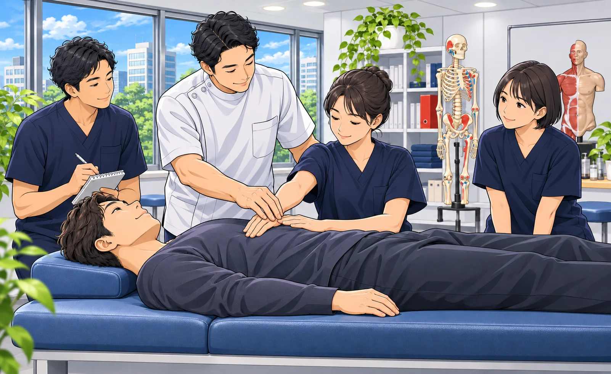

夜間受講制度
18時からの夜間授業を用意しています。仕事帰りや空いた時間を活用して、自分のペースで学べます。
学習支援

在学中のサポート
18時からの夜間授業を用意しています。仕事帰りや空いた時間を活用して、自分のペースで学べます。
受講料のお支払いには、各種教育ローンの利用についてもご案内しています。詳細は学院へのご相談時にご確認ください。
スクール内の実技中に起こりうる事故やケガに備えた制度を導入しています。適用範囲や条件は学院でご案内します。
系列治療院のネットワークを活かし、就職先紹介から面接準備まで、一人ひとりの希望や将来のビジョンに合わせて支援します。
物件探し、資金計画、集客、経営ノウハウまで。グループの経験を活かして、独立開業をサポートします。
卒業後のサポート
特定非営利活動法人日本整体療法技術支援協会の会員になると、予約制スクーリングや会員限定セミナーの特別価格での受講などを利用できます。症例相談や技術サポートも行っています。
同協会の会員になることで、施術者向け賠償責任保険を継続して利用できます。加入条件や補償内容は、学院・協会へご確認ください。
卒業後も希望を丁寧に伺い、求人紹介や面接準備まで支援します。新たな職場への一歩も相談できます。
物件探しから資金計画、開業後の運営まで。技術だけでなく、経営に関する支援も行います。
※会員制度の利用条件、費用、予約状況などは個別にご確認ください。

新しい一歩を、ここから。
学び方も、仕事のことも、これからの自分のことも。
まずは気軽に、あなたの目指す未来を聞かせてください。